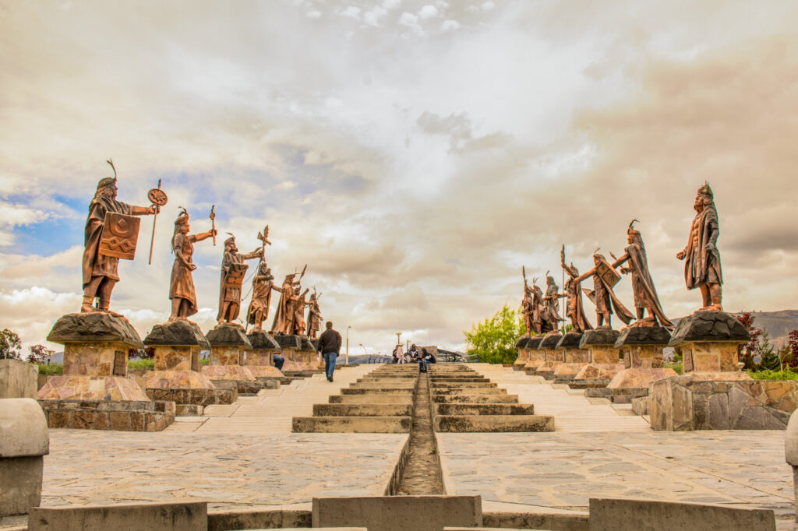

Tour: Alameda de los Incas, Polloc, Namora, Laguna San Nicolás Y Hacienda la Collpa

1 Día
Desde: S/ 350
Ubicación: Cajamarca
Incluye: Movilidad, Recojo, Entradas
Incluye
MOVILIDAD: Auto privado, cómodo, limpio y con buena música (Bluetooth).
RECOJO: Desde su hotel y llegada hasta su hotel.
ENTRADAS: A todos los lugares y paseo en bote
Itinerario
8:00 a.m.: Los recogemos de su hospedaje para iniciar nuestro recorrido.
8:30 a.m.: Nuestra primera parada es en el complejo Qhapac Ñan, para visitar la Alameda de los Incas.
9:30 a.m.: Continuamos nuestro camino hacia el C.P. donde visitamos el Santuario de la Virgen del Rosario de Polloc, hermosa construcción religiosa trabajada por la congregación italiana de don Bosco en coordinación con el centro poblado de Polloc.
11:30 a.m.: Luego visitamos el pueblo de Namora, la tierra de las guitarras y el capulí, donde aprovecharemos para visitar a los artesanos con especialidad en fabricación de guitarras y luego nos daremos una vuelta por la casa del alfajor, donde tendremos la oportunidad de degustar de sus ricos postres.
1:30 p.m.: Recorremos la laguna San Nicolás, donde nos tomaremos un momento para apreciar la belleza de su paisaje, en sus casi 2 km de extensión alberga una infinidad de aves endémicas y migratorias que podremos observar, también se podrá disfrutar de un paseo en totora en el lago.
2:30 p.m.: Seguimos nuestro camino al distrito de para visitar la ex hacienda La Colpa, este lugar es conocido por su espectáculo el famoso llamado de las vacas.
Condiciones
Cantidad de personas: El paquete mínimo es para CUATRO personas.
Impuestos: El Impuesto General a las Ventas (IGV) está incluido en el precio del paquete turístico.
Validez de la Oferta: La oferta tiene una validez de cinco (05) días hábiles, a partir de la entrega de la cotización.
Consentimiento de uso de datos exclusivos para TM Travel y fines, (traslado y alojamiento o restaurante si fuera el caso), de igual manera serán usados también para enviar futuras promociones.
Consentimiento del uso de fotografías durante los recorrido turísticos con fines publicitarios.
Cambios en la reserva: Se pueden realizar cambios en la reserva con una anticipación mínima de 8 horas.
Anulaciones: En caso de no presentarse (No Show) o cancelar la reserva después de haber realizado el pago, se puede cambiar la fecha del viaje o posponerlo, pero no se realizará ningún reembolso.